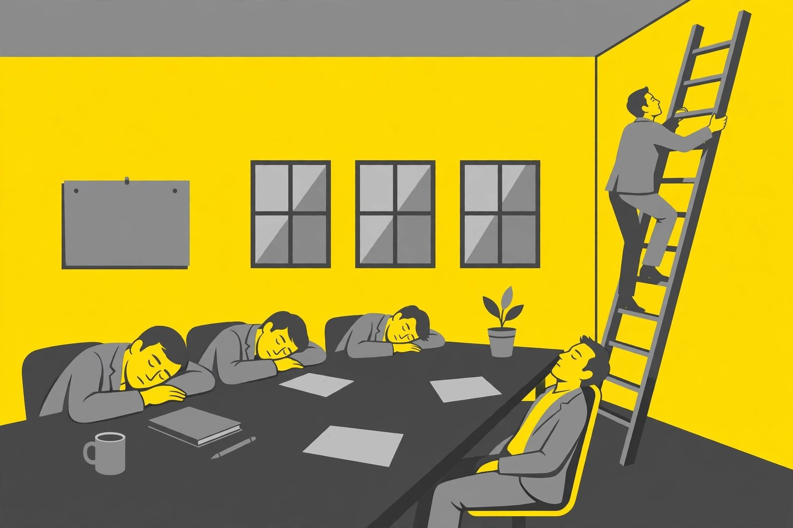

Work and office dad jokes (kind enough for Monday)

Workplace humor has one rule: laugh with everyone, never at anyone. These jokes target meetings, Mondays, coffee, and computers — the shared experiences, not the people. Safe for the break room, the team chat, and the boss's birthday card.
Meetings
- Meeting so well attended? It was a real conference of champions.
- Agenda's favorite exercise? Running in circles.
- Conference call go so long? It really dialed up the drama.
- Project manager bring a ladder to the meeting? To take things to the next level.
- Whiteboard's favorite compliment? "You're really drawing me in."
- Meeting end early? Everyone was board... with staying. (They left happy.)
- Presentation's favorite dessert? PowerPoint pie — lots of slides.
- Why do meetings pair well with dad jokes? Both could have been an email, but here we are.
- Sticky note's favorite job? Anything — it really sticks with it.
- Conference room's favorite song? "Everybody Hurts (for a Break)."
Coffee and the break room
- Coffee file a police report? It got mugged.
- Espresso's favorite day? Brew Year's Day.
- Coffee never get lonely? It was always part of a blend.
- Decaf's life motto? "I can quit anytime. I just don't want to."
- Break room's favorite game? Microwave roulette.
- Donut's favorite meeting? The hole team gathering.
- Water cooler's favorite gossip? It's always full of hot takes.
- Lunch's favorite compliment? "You're the highlight of my workday."
- Sandwich's favorite promotion? Moving up to the top shelf of the fridge.
- Tea's approach to deadlines? Stay calm and steep on.
Mondays
- Monday's favorite exercise? Running late.
- Alarm clock's favorite day? None of them. It's an equal-opportunity buzzer.
- Monday morning's favorite song? "Here Comes the Sun (Eventually)."
- Coffee's Monday motto? "We've bean through worse."
- Commute's favorite book? "The Long and Winding Road."
- Monday's favorite superhero? Captain Obvious — "Looks like another week!"
- Inbox's Monday greeting? "You have 47 unread messages. Good luck."
- Why is Monday like a good friend? It shows up every week, wanted or not.
Computers and tech
- Computer see a doctor? It had a virus.
- Programmer quit? He didn't get arrays.
- Smartphone need glasses? It lost all its contacts.
- Wi-Fi's favorite pickup line? "I feel a strong connection."
- Password's life advice? "Be strong, stay mysterious, and never share yourself."
- Printer's favorite music? Paper jams.
- Spreadsheet's favorite vacation? A real cell-ebration.
- Mouse's favorite cheese? Clicks.
- Keyboard's favorite instrument? The space bar — it loves a good rest.
- Cloud's favorite joke? "I'm feeling a little foggy today."
Office life (the kind ones)
- Desk plant's favorite review? "You're really growing in this role."
- Stapler's career goal? To really hold things together.
- Calendar's favorite compliment? "You really date well."
- Elevator's favorite joke? It's always uplifting.
- Desk lamp's motto? "Stay bright, even on Mondays."
- Filing cabinet's dream? To finally get its life in order.
- Name badge's favorite introduction? "Hi, I'm with the pun department."
- Office chair's favorite activity? Spinning a good yarn.
- Notebook's favorite secret? It's full of great ideas — just ask the margins.
- Paycheck's favorite holiday? Every other Friday.
The office-joke code of conduct
Three rules keep work jokes safe: one, the joke is about the situation, never a person — roast the printer, not the intern. Two, keep it clean enough for the company all-hands. Three, read the room: a joke that lands at Friday drinks might flop in Monday's budget review.
Done right, a well-timed dad joke is a tiny act of kindness. It breaks the tension, gives everyone permission to smile, and reminds the whole team that work is serious but we don't always have to be.